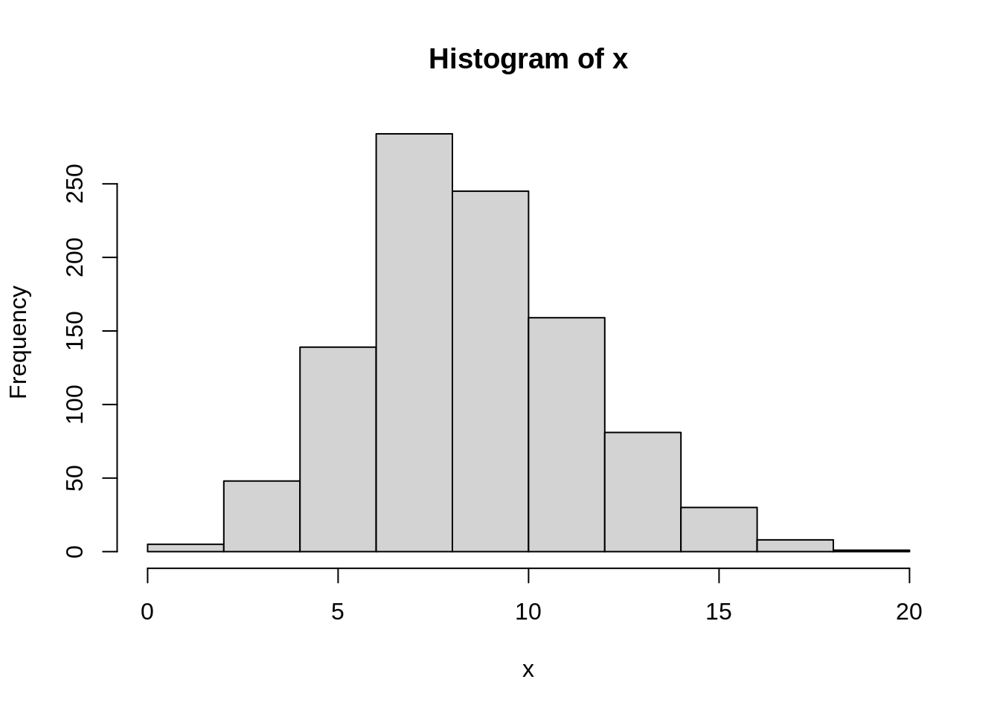
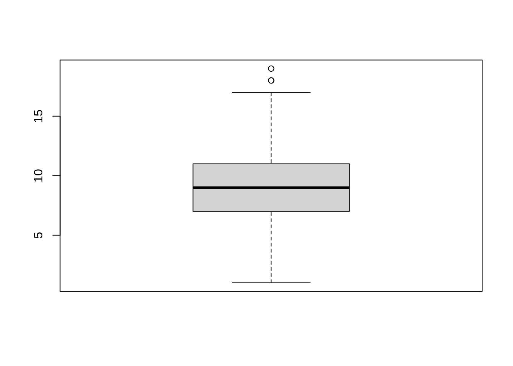
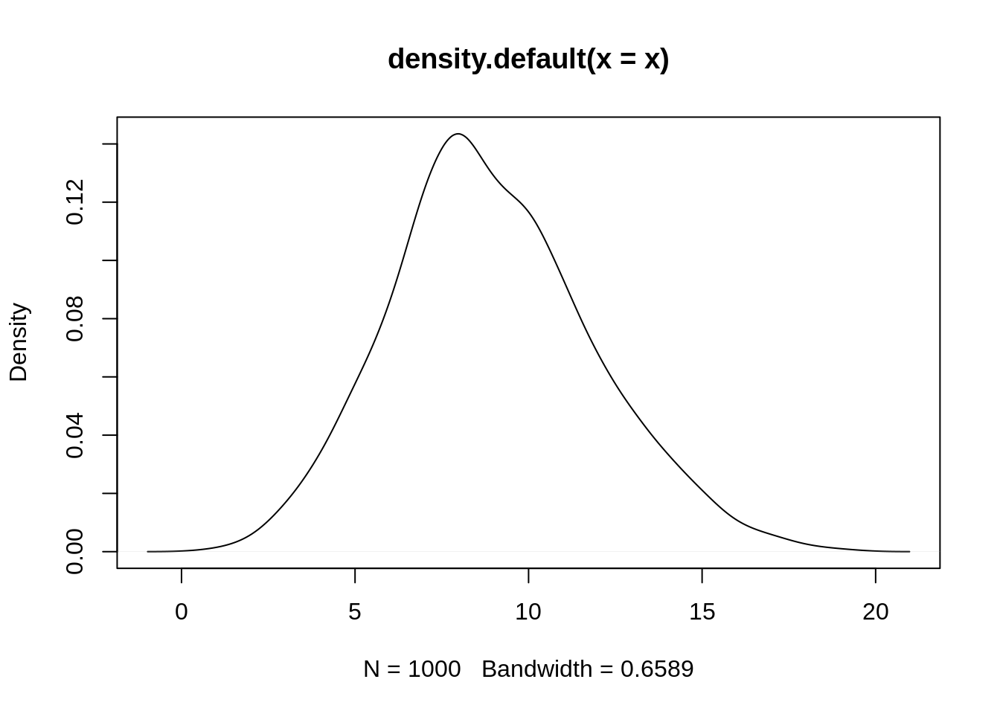

lambda = 1 # rate of 1 per unit
x <- 0:10 # how many counts?
z <- dpois(x = x, lambda = lambda)
plot(z, main ="Poisson Distribution: upto n=10 counts, lambda=1",
ylab = "dpois",
xlab = "counts, 1:n"
)
This is a play file. Note that there are five types of callouts, including: note, warning, important, tip, and caution.
https://katex.org/docs/supported.html
HTML with quarto (CSS, )https://quarto.org/docs/output-formats/html-basics.html Equations, Tex macros, https://quarto.org/docs/authoring/markdown-basics.html#equations https://quarto.org/docs/guide/ https://quarto.org/docs/publishing/github-pages.html ## Poisson Distribution
Let \(\chi\) be rv, counting of events , 0, 1, 2 … per interval. \(\chi\) might be
Suppose, on averge, receive 9 letters in mail each day. And suppose, can model post office as poisson. Then expect sd to be sqrt(9) and so expect actual number of letters to vary between 3 and 12 (2 sd).
\[\begin{align*} Pr(X = x) = {e^{-\lambda}\lambda^x}/{x!} \end{align*}\]lambda = 1 # rate of 1 per unit
x <- 0:10 # how many counts?
z <- dpois(x = x, lambda = lambda)
plot(z, main ="Poisson Distribution: upto n=10 counts, lambda=1",
ylab = "dpois",
xlab = "counts, 1:n"
)
set.seed(2021)
draws_approx <- function(u, N) sum (rbinom(N, 1, u/N))
draws_approx(9, N=9) # this says, p = 1 for each draw
draws_approx(9, N=18) # here p = 1/2, like flipping a coin, so total heads will vary.B <- 1000
u <- 9
N <- 18
# expect to see an avergae of 9 (successes from 18 draws at p = 1/2)
# expect sd to be 3 (if poisson holds)
# double[B], each is success for N in 1 sample
x <- rbinom(B, N, u/N)
mean(x)[1] 9.007sd(x)[1] 2.086457# suppose N really much larger, ie prob = u/N much smaller
# getting closer!
N <- 100
x <- rbinom(B, N, u/N)
mean(x)[1] 9.089sd(x)[1] 2.83992# now N huge, p = u/n tiny
N <- 10^6
x <- rbinom(B, N, u/N)
mean(x)[1] 8.948sd(x)[1] 2.914411hist(x)
boxplot(x)
plot(density(x))
/newpage
density_object <- density(mpg$hwy)
pdf("~/Downloads/print_and_delete/out.pdf")
plot(density_object)
dev.off()filename <- "~/Downloads/print_and_delete/out.png"
png(filename = filename,
width = 480, height = 480, units = "px", pointsize = 12)
plot(density_object)
dev.off()